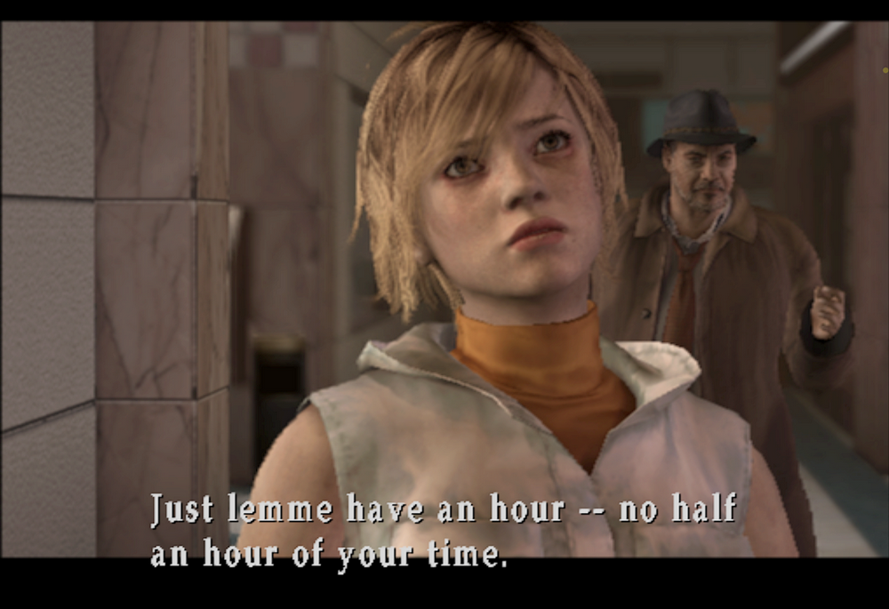
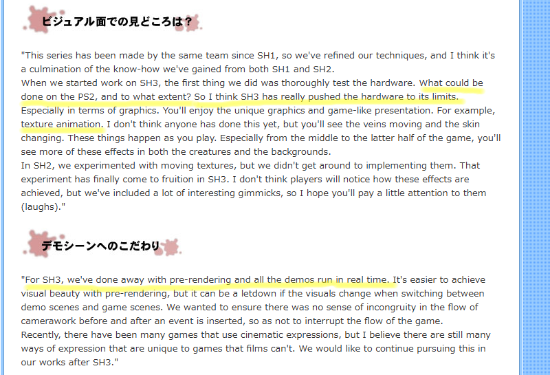
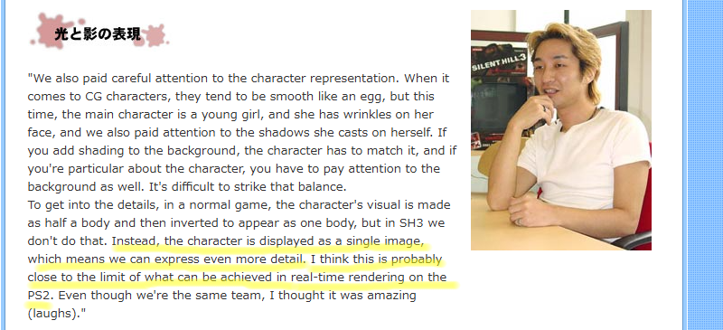
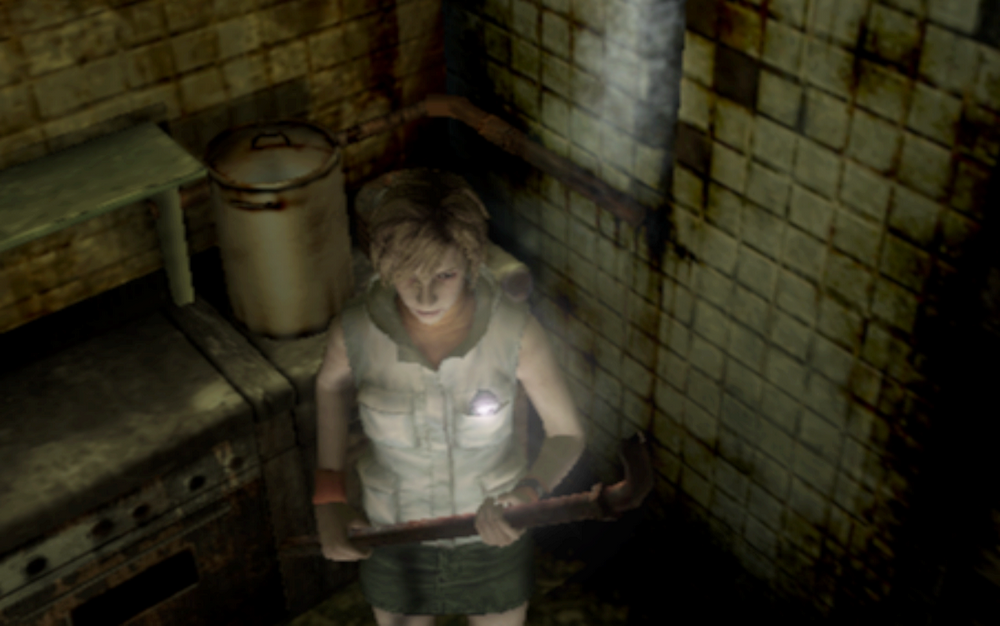
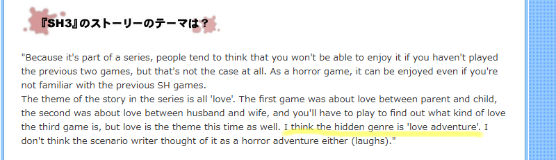
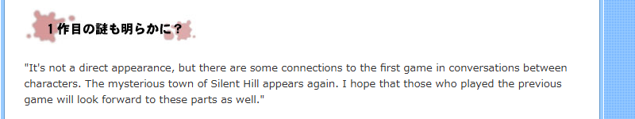
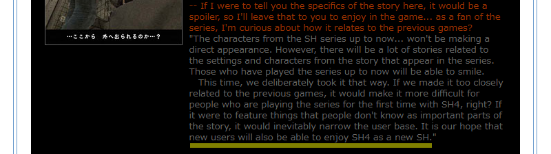
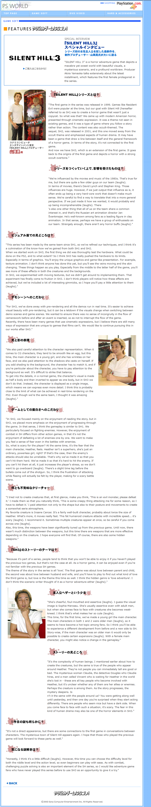

[SH3] Hidden Genre: Love Adventure???!!

PS WORLD "SILENT HILL3" Special Interview: Producer Akira Yamaoka discusses the latest game, featuring the series' first female protagonist.
![[SH3] Hidden Genre: Love Adventure???!!](img/da36.png)
This is a mirror of the DeviantArt version linked above, provided as a backup and for easier access.

This interview is from June 27, 2003, just before the Japanese release of SH3. I found this while digging for a SH4 article and wanted to share it. Yamaoka-san served as the producer for both SH3 and SH4.
The titles are images, so Google Translate won't work, but the body text can be machine-translated, so please translate it and give the article a read.
🌐PS WORLD 『SILENT HILL3』スペシャル・インタビュー シリーズ初の女性主人公を配した最新作を、制作プロデューサー・山岡晃氏が大いに語る
From PS WORLD "SILENT HILL3" Special Interview: Producer Akira Yamaoka discusses the latest game, featuring the series' first female protagonist. June 27, 2003
https://web.archive.org/web/20050503190150/http://www.jp.playstation.com/psworld/game/features/030627/sh3_int.html
✅ Quote: When we started work on SH3, the first thing we did was thoroughly test the hardware. What could be done on the PS2, and to what extent? So I think SH3 has really pushed the hardware to its limits.
✅ Quote: For SH3, we shifted away from pre-rendered movies, and all cutscenes now run in real time.

✅ Quote: This time, the protagonist is a young girl, so we made sure to include facial wrinkles and paid close attention to the way she casts shadows on herself.

I feel like the main point being emphasized overall is the visuals. He talks about things like the textures from the PS2 era, the fact that cutscenes became real-time starting with SH3 (as I mentioned before), and the depiction of character shadows and wrinkles.
Heather is depicted with freckles and wrinkles. Those are part of her charm.

The in-game model actually has freckles, too, not just in the cutscenes (though it's a bit hard to see).
✅ Quote: The theme of the story in the series is all "love." The first game was about love between parent and child, the second was about love between husband and wife, and you'll have to play to find out what kind of love the third game is, but love is the theme this time as well. I think the hidden genre is "love adventure."

And this connects to the "love adventure" title, lol. In the end, I guess SH3's theme is family love as well.
And as a SH4 fan, also speaking of that one, there were people who sought love, but unlike SH1 to SH3, there was no mutuality. I felt it was a one-sided, seeking love.
✅ Quote: It's not a direct appearance, but there are some connections to the first game in conversations between characters.

He also casually mentions the connection to SH1.
In a way, this is SH3's biggest spoiler, but I'm not sure how much of a spoiler it really is anymore, haha. It's pretty much common knowledge at this point anyway.

On the other hand, in SH4, he added a subtitle to avoid the appearance of a connection to the previous title. Comparing the two shows how different their concepts were, even though they were produced around the same time.
-
 [SH4] Innovation and Series Balance
[SH4] Innovation and Series Balance
PS WORLD "SILENT HILL4 -THE ROOM-" Special Interview: Producer Akira Yamaoka talks about "A New Stage"
